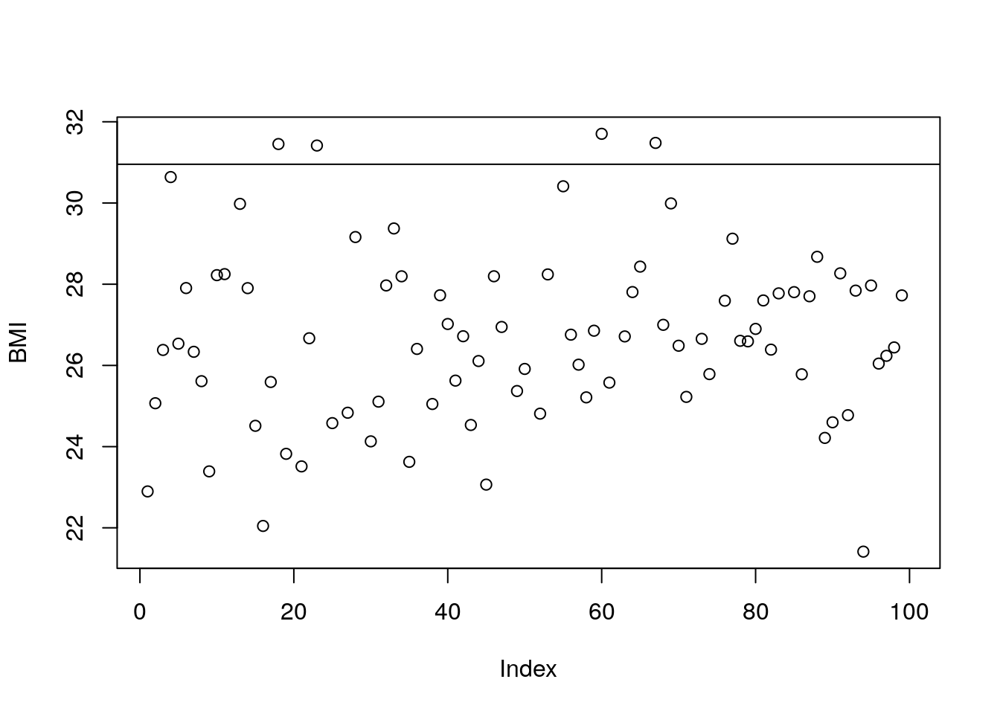

Session-2
1 Steps to Basic Data Analysis
- In this short section, we show how the data manipulation steps we have just seen can be used as part of an analysis pipeline:
- Reading in data
read.table()read.csv(), read.delim()
- Analysis
- Manipulating & reshaping the data
- perhaps dealing with “missing data”
- Any maths you like
- Diagnostic Plots
- Manipulating & reshaping the data
- Writing out results
write.table()write.csv()
1.1 A simple walkthrough
- We have data from 100 patients that given consent for their data to use in future studies
- A researcher wants to undertake a study involving people that are overweight
- We will walkthrough how to filter the data and write a new file with the candidates for the study
1.2 The Working Directory (wd)
- Like many programs R has a concept of a working directory
- It is the place where R will look for files to execute and where it will save files, by default
- For this course we need to set the working directory to the location of the course scripts
In RStudio use the mouse and browse to the directory where you saved the Course Materials
Session → Set Working Directory → Choose Directory…
1.3 Locate the data
Before we even start the analysis, we need to be sure of where the data are located on our hard drive
- Functions that import data need a file location as a character vector
- The default location is the working directory
getwd()## [1] "/home/sangram/Documents/work/Bionivid/learn-R"- If the file you want to read is in your working directory, you can just use the file name
list.files()- The
file.existsfunction does exactly what it says on the tin!- a good sanity check for your code
file.exists("data/patient-info.txt")## [1] TRUE- Otherwise you need the path to the file
- you can get this using
file.choose()
- you can get this using
- If you unsure about specifying a file path at the command line, this online tutorial will give you hands-on practice
1.4 Read in the data
- The data are a tab-delimited file. Each row is a record, each column is a field. Columns are separated by tabs in the text
- We need to read in the results and assign it to an object (
patients)
patients <- read.delim("data/patient-info.txt")In the latest RStudio, there is the option to import data directly from the File menu. File -> Import Dataset -> From Csv
- If the data are comma-separated, then use either the argument
sep=","or the functionread.csv(): - You need to make sure you use the correct function
- can you explain the output of the following lines of code?
tmp <- read.csv("data/patient-info.txt")
head(tmp)## ID.Race.Sex.Smokes.Height.Weight.State.Pet.Grade.Age
## 1 AC/AH/001\tWhite\tMale\tNon-Smoker\t182.87\t76.57\tGeorgia\tDog\t2\t85
## 2 AC/AH/017\tWhite\tMale\tNon-Smoker\t179.12\t80.43\tMissouri\tDog\t2\t85
## 3 AC/AH/020\tBlack\tMale\tNon-Smoker\t169.15\t75.48\tPennsylvania\tNone\t2\t47
## 4 AC/AH/022\tWhite\tMale\tNon-Smoker\t175.66\t94.54\tFlorida\tCat\t1\t72
## 5 AC/AH/029\tWhite\tFemale\tNon-Smoker\t164.47\t71.78\tIowa\tNA\t2\t70
## 6 AC/AH/033\tNA\tFemale\tSmoker\t158.27\t69.9\tMaryland\tDog\t2\t66- For full list of arguments:
?read.table1.5 Check the data
- Always check the object to make sure the contents and dimensions are as you expect
- R will sometimes create the object without error, but the contents may be un-usable for analysis
- If you specify an incorrect separator, R will not be able to locate the columns in your data, and you may end up with an object with just one column
# View the first 10 rows to ensure import is OK
patients[1:10,] ## ID Race Sex Smokes Height Weight State Pet
## 1 AC/AH/001 White Male Non-Smoker 182.87 76.57 Georgia Dog
## 2 AC/AH/017 White Male Non-Smoker 179.12 80.43 Missouri Dog
## 3 AC/AH/020 Black Male Non-Smoker 169.15 75.48 Pennsylvania None
## 4 AC/AH/022 White Male Non-Smoker 175.66 94.54 Florida Cat
## 5 AC/AH/029 White Female Non-Smoker 164.47 71.78 Iowa <NA>
## 6 AC/AH/033 <NA> Female Smoker 158.27 69.90 Maryland Dog
## 7 AC/AH/037 White Female Non-Smoker 161.69 68.85 Pennsylvania None
## 8 AC/AH/044 White Female Non-Smoker 165.84 70.44 North Carolina None
## 9 AC/AH/045 White Male Non-Smoker 181.32 76.90 Louisiana Dog
## 10 AC/AH/048 Hispanic Male Non-Smoker 167.37 79.06 North Carolina None
## Grade Age
## 1 2 85
## 2 2 85
## 3 2 47
## 4 1 72
## 5 2 70
## 6 2 66
## 7 1 24
## 8 1 68
## 9 1 86
## 10 2 63- or use the
View()function to get a display of the data in RStudio:
View(patients)1.6 Understanding the object
- Once we have read the data successfully, we can start to interact with it
- The object we have created is a data frame:
class(patients)## [1] "data.frame"- We can query the dimensions:
ncol(patients)## [1] 10nrow(patients)## [1] 100dim(patients)## [1] 100 10- The names of the columns are automatically assigned:
colnames(patients)## [1] "ID" "Race" "Sex" "Smokes" "Height" "Weight" "State"
## [8] "Pet" "Grade" "Age"- We can use any of these names to access a particular column:
- and create a vector
- TOP TIP: type the name of the object and hit TAB: you can select the column from the drop-down list!
patients$ID## [1] AC/AH/001 AC/AH/017 AC/AH/020 AC/AH/022 AC/AH/029 AC/AH/033 AC/AH/037
## [8] AC/AH/044 AC/AH/045 AC/AH/048 AC/AH/049 AC/AH/050 AC/AH/052 AC/AH/053
## [15] AC/AH/057 AC/AH/061 AC/AH/063 AC/AH/076 AC/AH/077 AC/AH/086 AC/AH/089
## [22] AC/AH/100 AC/AH/104 AC/AH/112 AC/AH/113 AC/AH/114 AC/AH/115 AC/AH/127
## [29] AC/AH/133 AC/AH/150 AC/AH/154 AC/AH/156 AC/AH/159 AC/AH/160 AC/AH/164
## [36] AC/AH/171 AC/AH/176 AC/AH/180 AC/AH/185 AC/AH/186 AC/AH/192 AC/AH/198
## [43] AC/AH/207 AC/AH/208 AC/AH/210 AC/AH/211 AC/AH/213 AC/AH/219 AC/AH/220
## [50] AC/AH/221 AC/AH/225 AC/AH/233 AC/AH/241 AC/AH/244 AC/AH/248 AC/AH/249
## [57] AC/SG/002 AC/SG/003 AC/SG/008 AC/SG/009 AC/SG/010 AC/SG/015 AC/SG/016
## [64] AC/SG/046 AC/SG/055 AC/SG/056 AC/SG/064 AC/SG/065 AC/SG/067 AC/SG/068
## [71] AC/SG/072 AC/SG/074 AC/SG/084 AC/SG/095 AC/SG/099 AC/SG/101 AC/SG/107
## [78] AC/SG/116 AC/SG/121 AC/SG/122 AC/SG/123 AC/SG/134 AC/SG/139 AC/SG/142
## [85] AC/SG/155 AC/SG/165 AC/SG/167 AC/SG/172 AC/SG/173 AC/SG/179 AC/SG/181
## [92] AC/SG/182 AC/SG/191 AC/SG/193 AC/SG/194 AC/SG/197 AC/SG/204 AC/SG/216
## [99] AC/SG/217 AC/SG/234
## 100 Levels: AC/AH/001 AC/AH/017 AC/AH/020 AC/AH/022 AC/AH/029 ... AC/SG/2341.7 Word of warning

Like families, tidy datasets are all alike but every messy dataset is messy in its own way - (Hadley Wickham - RStudio chief scientist and author of dplyr, ggplot2 and others) You will make your life a lot easier if you keep your data tidy and organised. Before blaming R, consider if your data are in a suitable form for analysis. The more manual manipulation you have done on the data (highlighting, formulas, copy-and-pasting), the less happy R is going to be to read it. Here are some useful links on some common pitfalls and how to avoid them
1.8 Handling missing values
- The data frame contains some
NAvalues, which means the values are missing – a common occurrence in real data collection NAis a special value that can be present in objects of any type (logical, character, numeric etc)NAis not the same asNULL:NULLis an empty R object.NAis one missing value within an R object (like a data frame or a vector)
- Often R functions will handle
NAs gracefully:
length(patients$Height)## [1] 100mean(patients$Height)## [1] NA- However, sometimes we have to tell the functions what to do with them.
- R has some built-in functions for dealing with
NAs, and functions often have their own arguments (likena.rm) for handling them:- annoyingly, different functions have different argument names to change their behaviour with regards to
NAvalues. Always check the documentation
- annoyingly, different functions have different argument names to change their behaviour with regards to
mean(patients$Height, na.rm = TRUE)## [1] 167.4969mean(na.omit(patients$Height))## [1] 167.49691.9 Analysis (reshaping data and maths)
- Our analysis involves identifying patients with extreme BMI
- we will define this as being two standard deviations from the mean
# Create an index of results:
BMI <- (patients$Weight)/((patients$Height/100)^2)
upper.limit <- mean(BMI,na.rm = TRUE) + 2*sd(BMI,na.rm = TRUE)
upper.limit## [1] 30.9533- We can plot a simple chart of the BMI values
- add a vertical line to indicate the cut-off
- plotting will be covered in detail shortly..
plot(BMI)
# Add a horizonal line:
abline(h=upper.limit) 
- It is also useful to save the variable we have computed as a new column in the data frame
round(BMI,1)## [1] 22.9 25.1 26.4 30.6 26.5 27.9 26.3 25.6 23.4 28.2 28.2 NA 30.0 27.9
## [15] 24.5 22.0 25.6 31.5 23.8 NA 23.5 26.7 31.4 NA 24.6 NA 24.8 29.2
## [29] NA 24.1 25.1 28.0 29.4 28.2 23.6 26.4 NA 25.0 27.7 27.0 25.6 26.7
## [43] 24.5 26.1 23.1 28.2 26.9 NA 25.4 25.9 NA 24.8 28.2 NA 30.4 26.8
## [57] 26.0 25.2 26.9 31.7 25.6 NA 26.7 27.8 28.4 NA 31.5 27.0 30.0 26.5
## [71] 25.2 NA 26.7 25.8 NA 27.6 29.1 26.6 26.6 26.9 27.6 26.4 27.8 NA
## [85] 27.8 25.8 27.7 28.7 24.2 24.6 28.3 24.8 27.8 21.4 28.0 26.0 26.2 26.4
## [99] 27.7 NApatients$BMI <- round(BMI,1)
head(patients)## ID Race Sex Smokes Height Weight State Pet Grade
## 1 AC/AH/001 White Male Non-Smoker 182.87 76.57 Georgia Dog 2
## 2 AC/AH/017 White Male Non-Smoker 179.12 80.43 Missouri Dog 2
## 3 AC/AH/020 Black Male Non-Smoker 169.15 75.48 Pennsylvania None 2
## 4 AC/AH/022 White Male Non-Smoker 175.66 94.54 Florida Cat 1
## 5 AC/AH/029 White Female Non-Smoker 164.47 71.78 Iowa <NA> 2
## 6 AC/AH/033 <NA> Female Smoker 158.27 69.90 Maryland Dog 2
## Age BMI
## 1 85 22.9
## 2 85 25.1
## 3 47 26.4
## 4 72 30.6
## 5 70 26.5
## 6 66 27.9- To actually select the candidates we can use a logical expression to test the values of the BMI vector being greater than the upper limit
- if the second line looks a bit weird, remember that
<-is doing an assignment. Thevalue we are assigning to our new variable is the logical (TRUEorFALSE) vector given by testing each item inBMIagainst theupper.limit
- if the second line looks a bit weird, remember that
BMI > upper.limit## [1] FALSE FALSE FALSE FALSE FALSE FALSE FALSE FALSE FALSE FALSE FALSE
## [12] NA FALSE FALSE FALSE FALSE FALSE TRUE FALSE NA FALSE FALSE
## [23] TRUE NA FALSE NA FALSE FALSE NA FALSE FALSE FALSE FALSE
## [34] FALSE FALSE FALSE NA FALSE FALSE FALSE FALSE FALSE FALSE FALSE
## [45] FALSE FALSE FALSE NA FALSE FALSE NA FALSE FALSE NA FALSE
## [56] FALSE FALSE FALSE FALSE TRUE FALSE NA FALSE FALSE FALSE NA
## [67] TRUE FALSE FALSE FALSE FALSE NA FALSE FALSE NA FALSE FALSE
## [78] FALSE FALSE FALSE FALSE FALSE FALSE NA FALSE FALSE FALSE FALSE
## [89] FALSE FALSE FALSE FALSE FALSE FALSE FALSE FALSE FALSE FALSE FALSE
## [100] NAcandidates <- BMI > upper.limitWe have seen that a logical vector can be used to subset a data frame
- However, in our case the result looks a bit funny
- Can you think why this might be?
patients[candidates,]## ID Race Sex Smokes Height Weight State Pet Grade
## NA <NA> <NA> <NA> <NA> NA NA <NA> <NA> NA
## 18 AC/AH/076 White Male Non-Smoker 176.22 97.67 Louisiana Cat 2
## NA.1 <NA> <NA> <NA> <NA> NA NA <NA> <NA> NA
## 23 AC/AH/104 White Male Smoker 169.85 90.63 Kentucky None 1
## NA.2 <NA> <NA> <NA> <NA> NA NA <NA> <NA> NA
## NA.3 <NA> <NA> <NA> <NA> NA NA <NA> <NA> NA
## NA.4 <NA> <NA> <NA> <NA> NA NA <NA> <NA> NA
## NA.5 <NA> <NA> <NA> <NA> NA NA <NA> <NA> NA
## NA.6 <NA> <NA> <NA> <NA> NA NA <NA> <NA> NA
## NA.7 <NA> <NA> <NA> <NA> NA NA <NA> <NA> NA
## NA.8 <NA> <NA> <NA> <NA> NA NA <NA> <NA> NA
## 60 AC/SG/009 White Male Non-Smoker 166.84 88.25 Vermont Dog 1
## NA.9 <NA> <NA> <NA> <NA> NA NA <NA> <NA> NA
## NA.10 <NA> <NA> <NA> <NA> NA NA <NA> <NA> NA
## 67 AC/SG/064 White Male Non-Smoker 169.16 90.08 Illinois Cat 2
## NA.11 <NA> <NA> <NA> <NA> NA NA <NA> <NA> NA
## NA.12 <NA> <NA> <NA> <NA> NA NA <NA> <NA> NA
## NA.13 <NA> <NA> <NA> <NA> NA NA <NA> <NA> NA
## NA.14 <NA> <NA> <NA> <NA> NA NA <NA> <NA> NA
## Age BMI
## NA NA NA
## 18 26 31.5
## NA.1 NA NA
## 23 87 31.4
## NA.2 NA NA
## NA.3 NA NA
## NA.4 NA NA
## NA.5 NA NA
## NA.6 NA NA
## NA.7 NA NA
## NA.8 NA NA
## 60 43 31.7
## NA.9 NA NA
## NA.10 NA NA
## 67 44 31.5
## NA.11 NA NA
## NA.12 NA NA
## NA.13 NA NA
## NA.14 NA NAThe which function will take a logical vector and return the indices of the TRUE values
- This can then be used to subset the data frame
which(BMI > upper.limit)## [1] 18 23 60 67candidates <- which(BMI > upper.limit)1.10 Outputting the results
- We write out a data frame of candidates (patients with BMI more than standard deviations from the mean) as a ‘comma separated values’ text file (CSV):
write.csv(patients[candidates,], file="selectedSamples.csv")- The output file is directly-readable by Excel
- It’s often helpful to double check where the data has been saved. Use the get working directory function:
getwd() # print working directory
list.files() # list files in working directoryTo recap, the set of R commands we have used is:-
patients <- read.delim("data/patient-info.txt")
BMI <- (patients$Weight)/((patients$Height/100)^2)
upper.limit <- mean(BMI,na.rm = TRUE) + 2*sd(BMI,na.rm = TRUE)
plot(BMI)
# Add a horizonal line:
abline(h=upper.limit) 
patients$BMI <- round(BMI,1)
candidates <- which(BMI > upper.limit)
write.csv(patients[candidates,], file="selectedSamples.csv")1.11 Exercise: Exercise 3
- A separate study is looking for patients that are underweight and also smoke;
- Modify the condition in our previous code to find these patients
- e.g. having BMI that is 2 standard deviations less than the mean BMI
- Write out a results file of the samples that match these criteria, and open it in a spreadsheet program